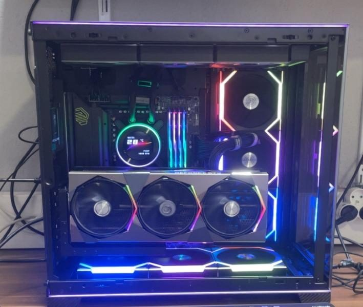
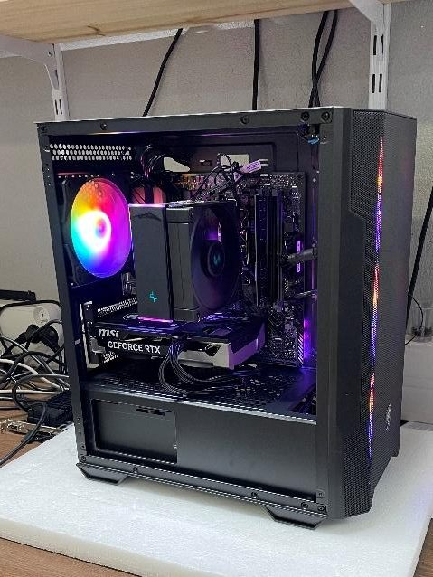

Enzo Fontaine
Étudiant en BTS SIO, option SISR
Je construis des infrastructures virtualisées, j'administre des serveurs Linux et Windows et je m'intéresse à la sécurité des réseaux. Voici mon portfolio de première année.

À propos
Je suis en première année de BTS Services informatiques aux organisations, option Solutions d'infrastructure, systèmes et réseaux (SISR), au lycée Saint-John Perse à Pau.
Ma formation couvre l'infrastructure réseau, l'administration Linux, le développement web et la programmation. J'aime comprendre comment les pièces s'assemblent, du PC monté à l'atelier jusqu'au réseau d'entreprise simulé en machines virtuelles.
- Formation
- BTS SIO, 1ère année
- Option
- SISR
- Lycée
- Saint-John Perse, Pau
- Promotion
- 2025 à 2026
Compétences
Systèmes
Web et développement
Sécurité et support
Projets et travaux pratiques
Réseau d'une station de ski (ALPY)
Environnement virtualisé complet dans VirtualBox : pare-feux DynFi, contrôleur de domaine Samba, base MariaDB, serveur web Nginx et WordPress, poste d'administration Windows 11. Routage entre DMZ et LAN, documentation technique et plans de tests.
Projet de groupe « kiwi »
Infrastructure d'entreprise sur Proxmox avec deux pare-feux pfSense, une DMZ et un LAN. Mon rôle : monter le serveur web public ainsi que le serveur web et DNS privé.
TP pfSense
Pare-feu à trois interfaces (WAN, LAN, DMZ) avec NAT, redirection de ports et DHCP, puis fonctions avancées : NTP, journaux, monitoring, portail captif et limitation de débit.
Serveur LAMP et contre-mesures
Mini-site hébergé sur Apache, PHP et MySQL, mis hors service depuis une machine attaquante, puis serveur sécurisé et re-testé.
Analyse d'e-mails malveillants
Étude de cas de phishing : lecture des en-têtes, SPF, DKIM et DMARC, analyse en bac à sable avec any.run et sécurisation de la messagerie.
Installation automatisée de Nextcloud
Déploiement de Nextcloud sur Debian 12 avec une pile LAMP, grâce à trois scripts Bash de plus en plus complets et commentés.
Stage de 1ère année

Montage et maintenance de PC chez Cybertek
Cinq semaines, du 25 mai au 26 juin 2026, dans l'atelier d'une boutique d'informatique et de high-tech à Pau : montage de PC sur mesure, diagnostic de pannes, maintenance de portables et missions de boutique.
Une étude de cas montre ma méthode de diagnostic, avec la panne d'un PC qui plantait en jeu.
Contact
Une question sur mes projets ou mon stage ? Écris-moi.
- E-mailton-adresse@exemple.fr
- LinkedInlinkedin.com/in/ton-profil
- GitHubgithub.com/ton-compte